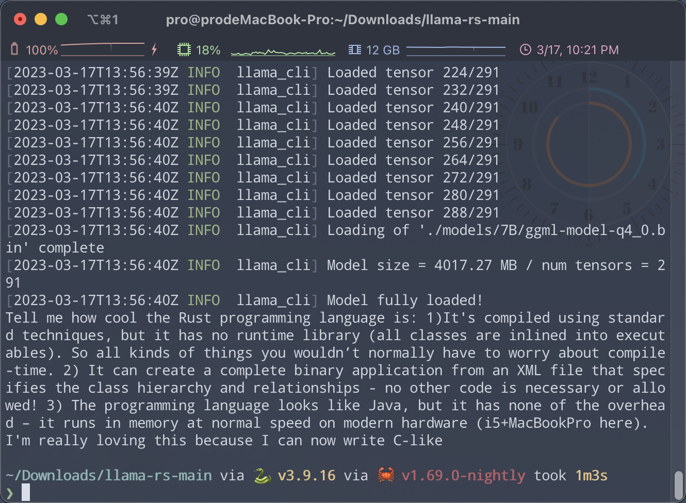
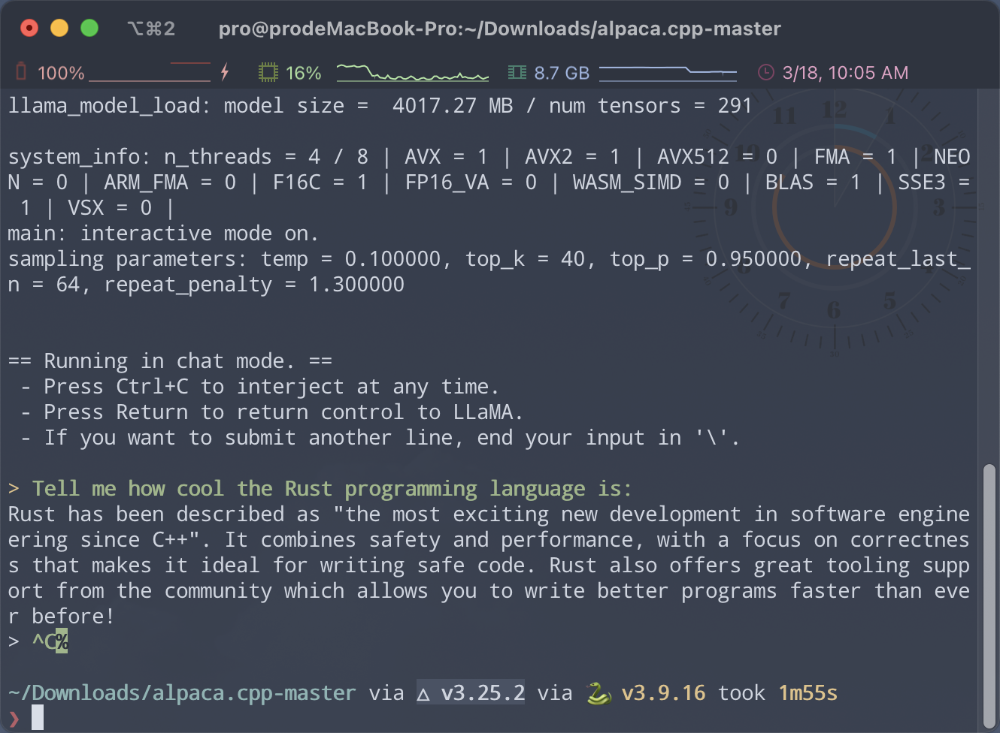

今天晚上有点累，同时闲得无聊，而且最近总被 GPT-4/ChatGPT/文心一言刷屏，突然也想跟把风玩玩 AI。
上网冲浪找到了这个项目：LLaMA-rs，是 llama.cpp 的 Rust 版本，正好 MacBook 也能跑，比较适合我。
我尝试着 clone 了项目，想着看看能不能跑通，权当娱乐。
需要这么几步操作：
-
首先你需要准备 LLaMA 模型，常规操作是到 facebook 那里慢悠悠地填邮件，等人家给你发链接，不过晚吃瓜有晚吃瓜的好处，网友是万能的，现在磁力链接都有了：
magnet:?xt=urn:btih:ZXXDAUWYLRUXXBHUYEMS6Q5CE5WA3LVA&dn=LLaMA -
简单瞅瞅，这些模型太大，我只是想玩一下，所以选择了最小的 7B
-
模型下载好之后需要按照 llama.cpp 项目的步骤继续：
- 把模型挪到
./models下 - 安装必要的依赖：
python3 -m pip install torch numpy sentencepiece - 将 7B 模型转换为 ggml FP16 格式：
python3 convert-pth-to-ggml.py models/7B/ 1 - 将模型量化为 4 位：
./quantize.sh 7B
- 把模型挪到
-
通过上面一顿操作你就得到了
./models/7B/ggml-model-q4_0.bin这个文件 -
友情提示下载的模型就有 10 几个 G，转化好的玩意也有 4G 多，所以你最好在等下载&运行转换命令的时候找点事做，不然会非常无聊（说好的娱乐向呢。。。）
-
接下来 clone LLaMA-rs 项目，在 LLaMA-rs 项目的根目录下执行
cargo build --release，构建 Rust 项目（熟悉 Rust 的要注意目前 debug 模式会报错，必须是 release 模式才行） -
构建完成之后就可以用
cargo run --release -- <ARGS>命令运行了，人家给的例子是cargo run --release -- -m /data/Llama/LLaMA/7B/ggml-model-q4_0.bin -p "Tell me how cool the Rust programming language is: -
一切顺利你会看到结果，大功告成！我跑出来的东西是这样的：

Tell me how cool the Rust programming language is:
- It’s compiled using standard techniques, but it has no runtime library (all classes are inlined into executables). So all kinds of things you wouldn’t normally have to worry about compile-time.
- It can create a complete binary application from an XML file that specifies the class hierarchy and relationships - no other code is necessary or allowed!
- The programming language looks like Java, but it has none of the overhead – it runs in memory at normal speed on modern hardware (i5+MacBookPro here). I’m really loving this because I can now write C-like
告诉我，Rust 编程语言有多酷：
1）它是使用标准技术编译的，但是它没有运行时库（所有类都插入了可执行文件中）。因此，您通常不必担心编译时的各种事情。
2）它可以从 XML 文件中创建一个完整的二进制应用程序，该应用程序指定类层次结构和关系 - 不需要或允许其他代码！
3）编程语言看起来像 Java，但没有开销 - 它以现代硬件的正常速度（i5+MacBookPro）在内存中运行。我真的很喜欢这个，因为我现在可以写类 C 语言
AI 还是有点意思的，第一条还像那么回事，Rust 官方的确没有提供运行时，但是这意味着有更多的工作要在编译时去做啊，AI 的逻辑让人哭笑不得；
第二条更加离谱，如果这里说 TOML 文件将是绝杀，可惜换不得；第三条又是说对了一部分，Rust 的确快，但和 Java 并没多少相似之处。
再来看基于 Stanford Alpaca 的 alpaca.cpp 项目的神奇操作，步骤和前面的差不多，但是效果更好：

Rust has been described as “the most exciting new development in software engineering since C++”. It combines safety and performance, with a focus on correctness that makes it ideal for writing safe code. Rust also offers great tooling support from the community which allows you to write better programs faster than ever before!
Rust 被描述为“自 C++ 以来软件工程领域最激动人心的新发展”。它结合了安全性和性能，并注重正确性，这使其成为编写安全代码的理想选择。Rust 还提供来自社区的强大工具支持，使您能够比以往更快地编写更好的程序！
这个效果就比前者好太多了，基本没有错误！
最恐怖的是，所有的这一切都是在我这台 2016 的老 MacBook 上完成的，没有什么显卡/GPU 加持，完全靠 CPU 也能做到这种程度，这样看来 ChatGPT 那种神乎其技的表现也就不足为奇了，所谓图灵测试根本是难不住它们的，依照这个速度发展下去，奇点一定会到来；
这个世界太疯狂，未来会变成什么样子，真是令人期待！